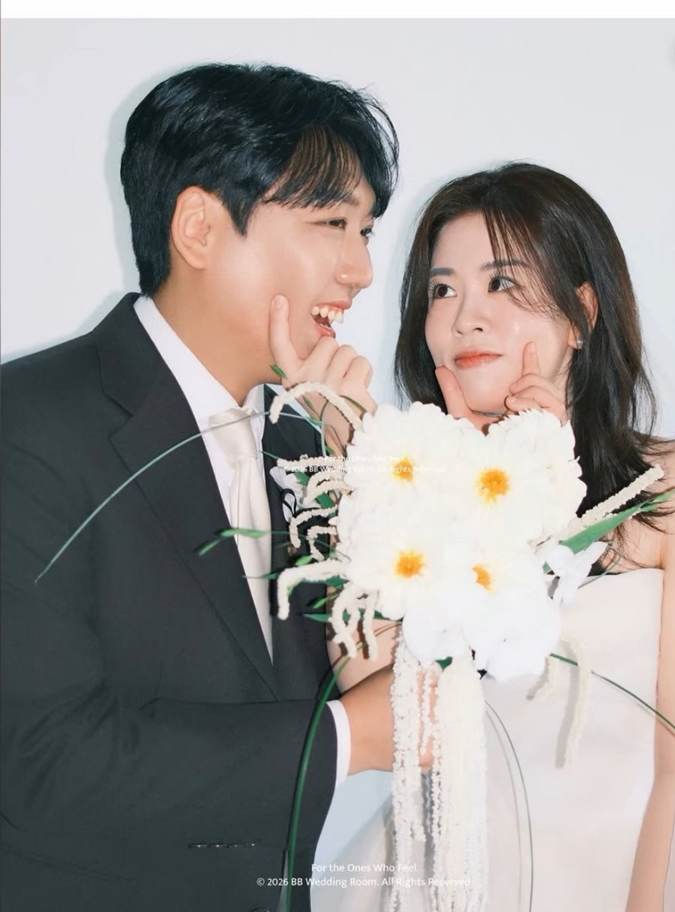
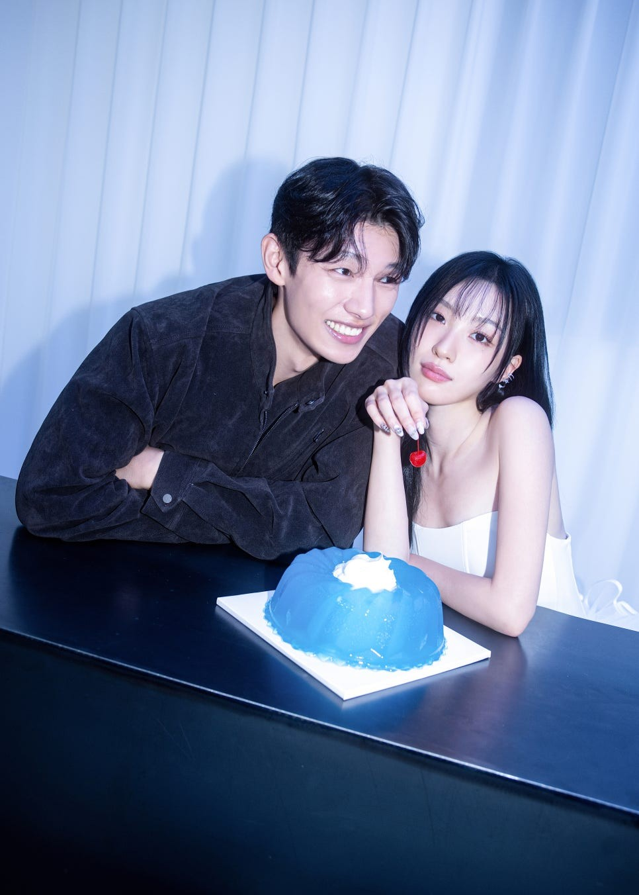
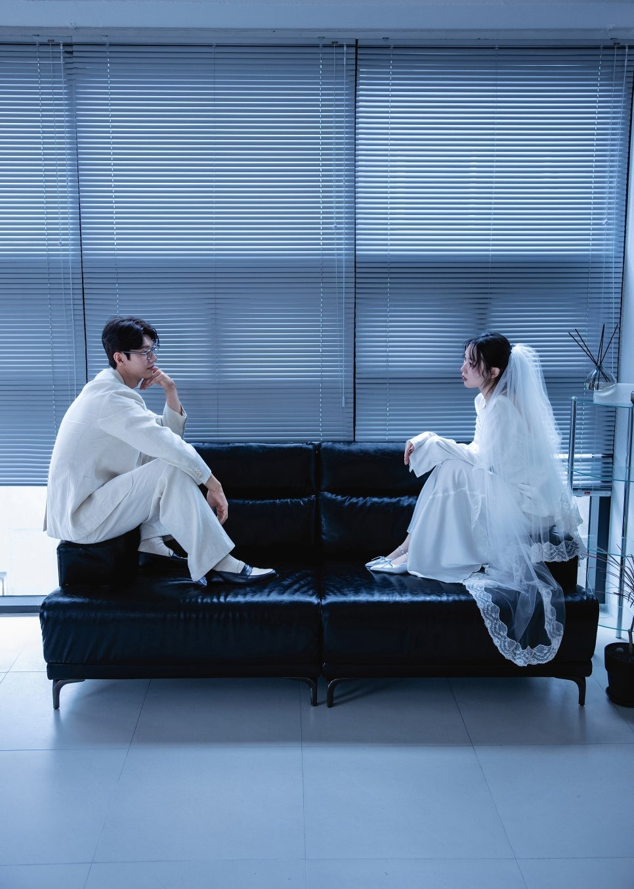
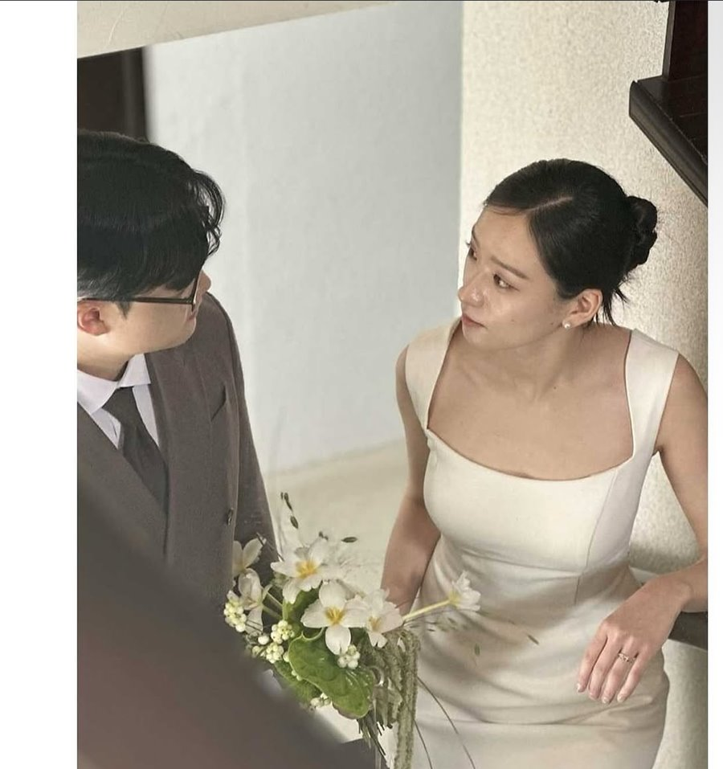
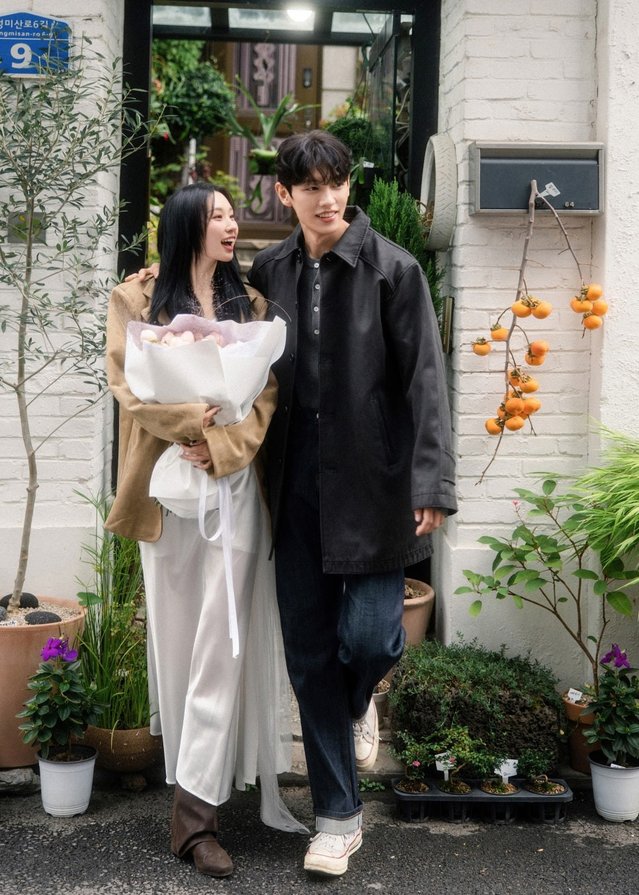
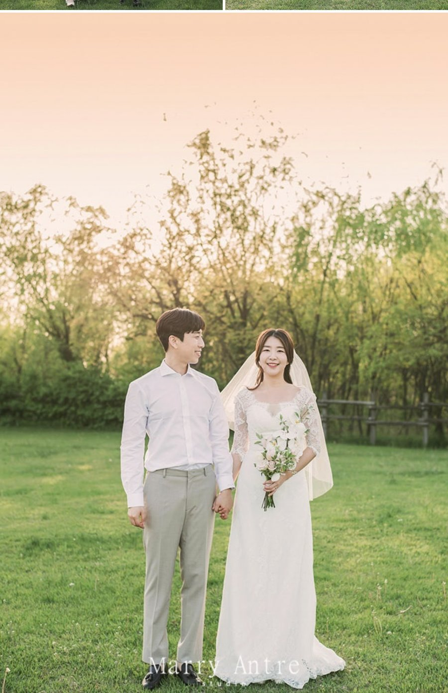
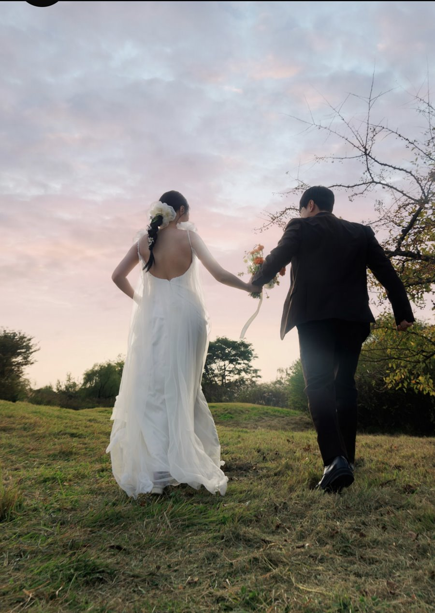
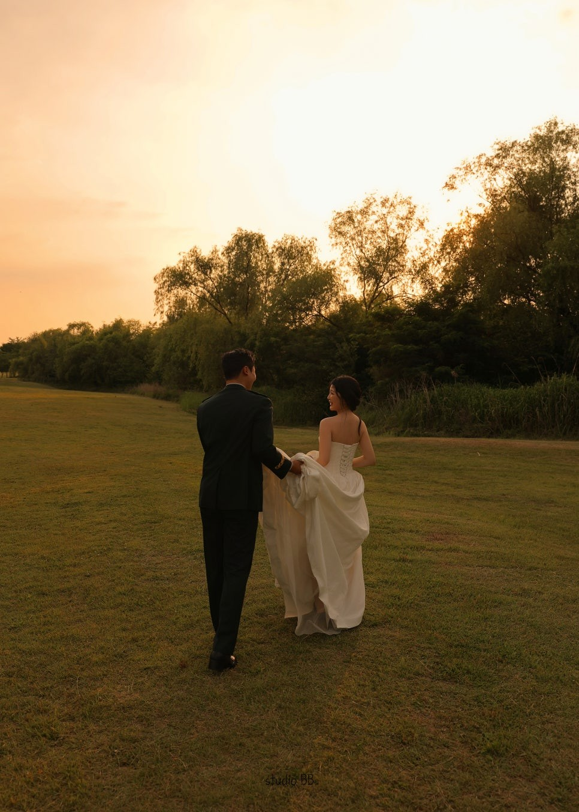

01
Indoor · Silver
실내 · 실버
차가운 메탈 톤 배경 위에 새틴의 윤기를 살리는 공간. 표정과 실루엣이 또렷하게 남아요.
미니멀시크모던


원하는 소품
- 작은 부케흰 장미 + 은방울꽃
- 반지손 클로즈업용
- 이어링진주 또는 실버
- 예복블랙 턱시도 + 보타이
원하는 느낌
차갑고 정돈된, 흑백이 잘 어울리는
메모드레스는 스트랩 슬림 새틴, 헤어는 매끈한 낮은 번. 웃음은 조금 참고 눈빛만 살려요.
Reference Board · 2026.11.18
마음에 드는 촬영 사진을 모아두는 페이지예요.
공간별로 사진을 살펴보고, 좋아하는 분위기와 포즈를 찾아봐요.


의상·헤어 순서, 꼭 찍고 싶은 컷과 준비된 소품을 정리했어요.
Indoor · Silver
차가운 메탈 톤 배경 위에 새틴의 윤기를 살리는 공간. 표정과 실루엣이 또렷하게 남아요.
차갑고 정돈된, 흑백이 잘 어울리는
메모드레스는 스트랩 슬림 새틴, 헤어는 매끈한 낮은 번. 웃음은 조금 참고 눈빛만 살려요.
Indoor · White
커튼과 창가의 자연광이 그대로 들어오는 공간. 베일과 볼가운이 가장 사랑스럽게 보여요.


밝고 부드러운, 빛이 많은
메모오프숄더 볼가운에 반묶음 + 베일. 창가 자연광을 먼저 쓰고, 톤업은 목과 팔 위주로 얇게 발라요.
Indoor · Blue
푸른 커튼과 테이블, 소파를 활용한 컷을 모았어요. 카페트 공간과 구분해 블루 톤과 소품 연출을 참고해요.





맑고 차분한, 색 대비가 살아있는
메모배경이 강한 색이라 드레스는 아이보리 · 화이트로. 부케도 연한 톤으로 맞춰요.
Indoor · Carpet
블루 카페트와 블랙 소파가 있는 공간이에요. 전신 컷과 앉은 자세를 함께 참고해요.


따뜻하고 아늑한, 필름 사진 같은
메모앉고 눕는 컷이 많아서 무릎이 편한 실루엣이 좋아요. 신발은 벗어도 되는 걸로.
Outdoor · Flower Shop
꽃집 앞 골목과 플라워 월을 배경으로 걷는 컷. 표정이 자연스럽게 풀리는 구간이에요.





발랄하고 자연스러운, 걷다가 웃는
메모슬림이나 미디 드레스, 포니테일이나 반묶음. 꽃집 앞이니까 꽃을 적극적으로 활용해요.
Outdoor · Field
들판과 노을, 해 질 무렵의 골든아워. 실루엣과 바람이 주인공이 되는 마지막 구간이에요.




자유롭고 따뜻한, 해 질 무렵
메모바람에 날리는 얇은 레이어나 플리츠. 헤어는 묶음이 편하고, 해 지기 전 10분을 노려요.
Run Order
실내 네 공간을 먼저 돌고 실외 두 곳으로 나가요. 드레스와 헤어를 몇 번 바꿀지는 작가님과 상의해서 정해요.
세부 순서와 시간은 현장 상황에 따라 바뀔 수 있어요. 첫 드레스는 푼 웨이브로 시작하고, 드레스가 바뀔 때마다 작가님과 다시 상의해요.
Reference
아래 레퍼런스의 무드와 포즈를 참고했어요. 실제 촬영 결과와는 달라질 수 있어요.